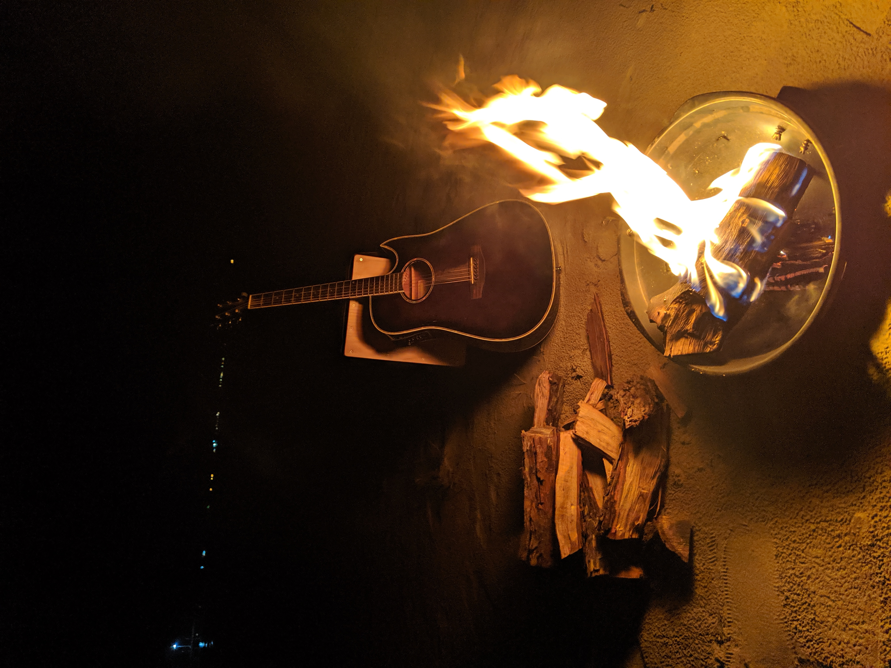
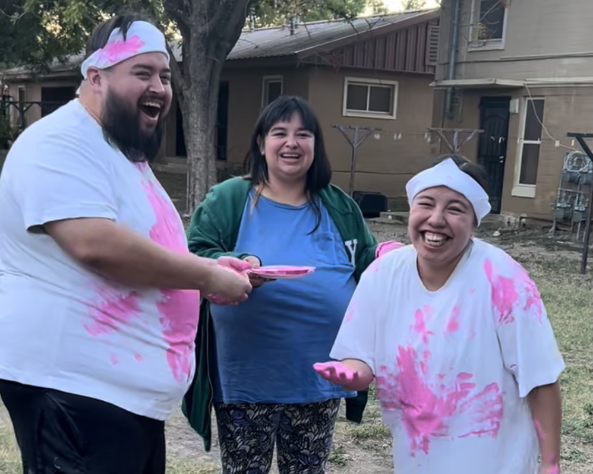
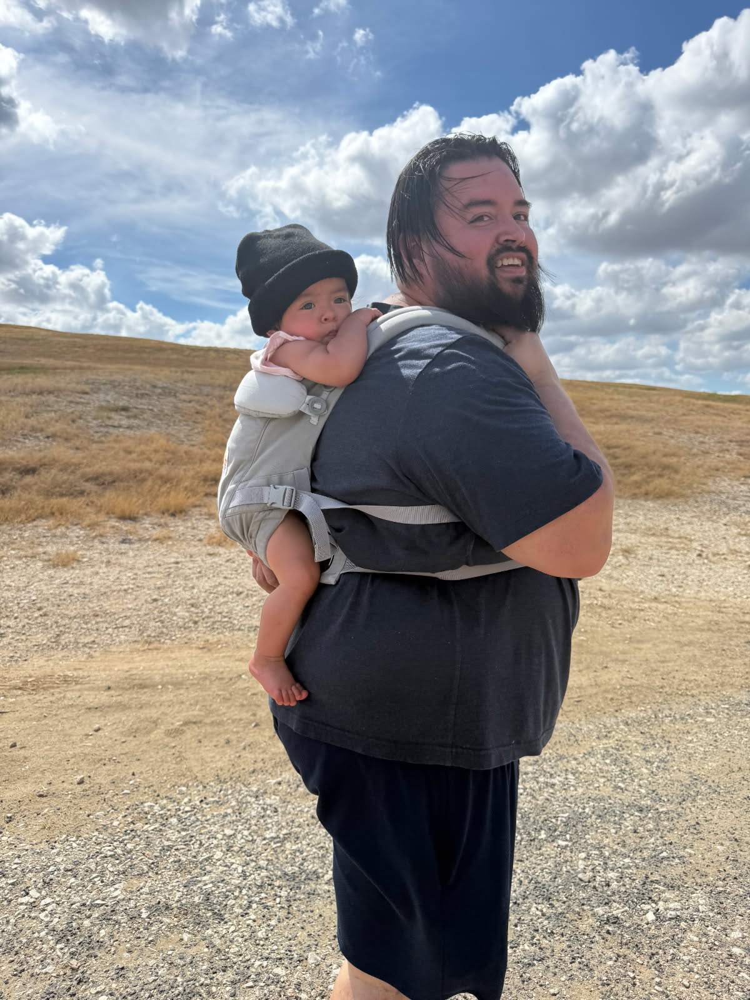
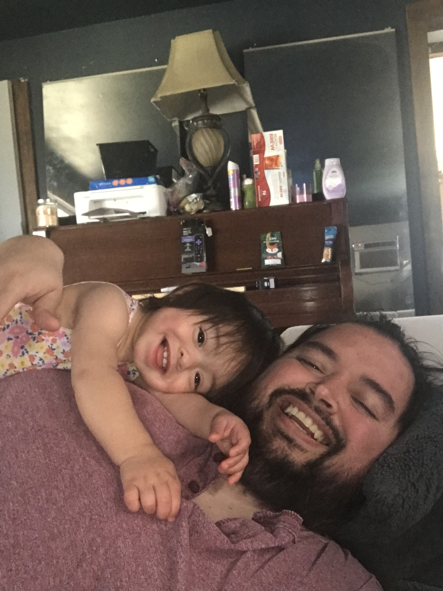
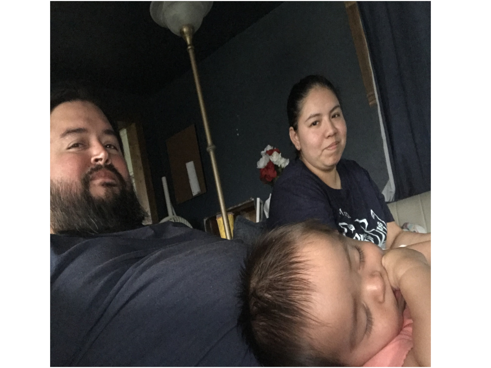

Campfires & Ocean Nights
Life On The Road
Before starting a family, I spent weeks traveling across the country exploring national parks, hiking trails, and sleeping beneath the stars. Some of my favorite memories come from beach campfires and nights spent in the back of my truck, waking up to the sound of the ocean.

Hiking Adventures
Finding Peace Outdoors
Hiking has always been one of my favorite ways to recharge. Exploring new trails and experiencing nature helped me develop a deep appreciation for adventure, discovery, and the beauty that exists just beyond the next bend in the trail.

It's A Girl !
Family First
Everything changed when I started a family. Today, my greatest joy comes from spending time with my wife and daughter, creating memories together, and sharing the adventures that once belonged only to me.

Tiny Hiking Partner
New Adventures
My daughter often rides along in a backpack carrier as we explore trails together. Watching her experience nature for the first time has made every hike feel new again.

Movie Nights
Popcorn & Memories
Whether we're at an outdoor theater or curled up on the couch, movies have become one of our favorite family traditions. Add a giant bucket of popcorn and it's a perfect evening.

The Little Things
Everyday Adventures
Some of our favorite memories come from ordinary moments. Grocery shopping, trying new snacks, and simply spending time together often become the stories we laugh about the most.